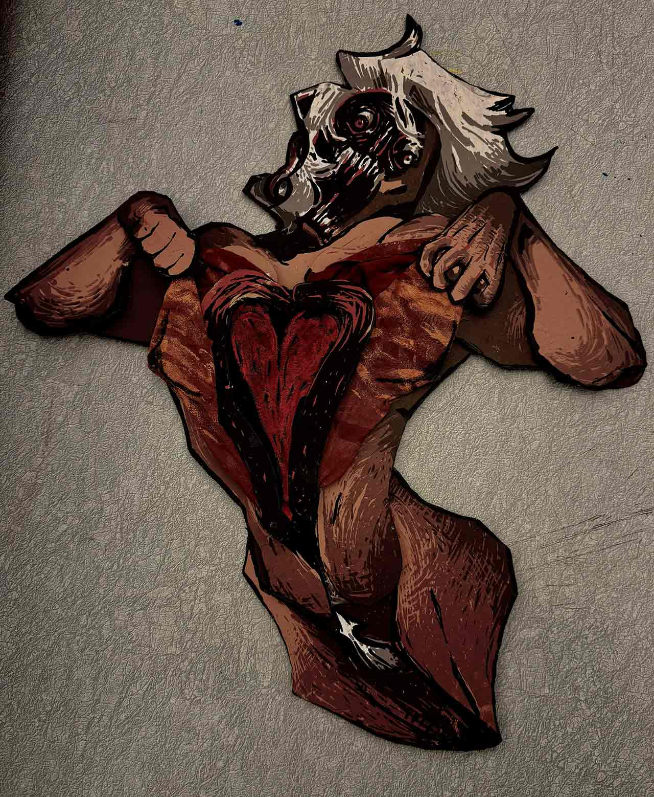
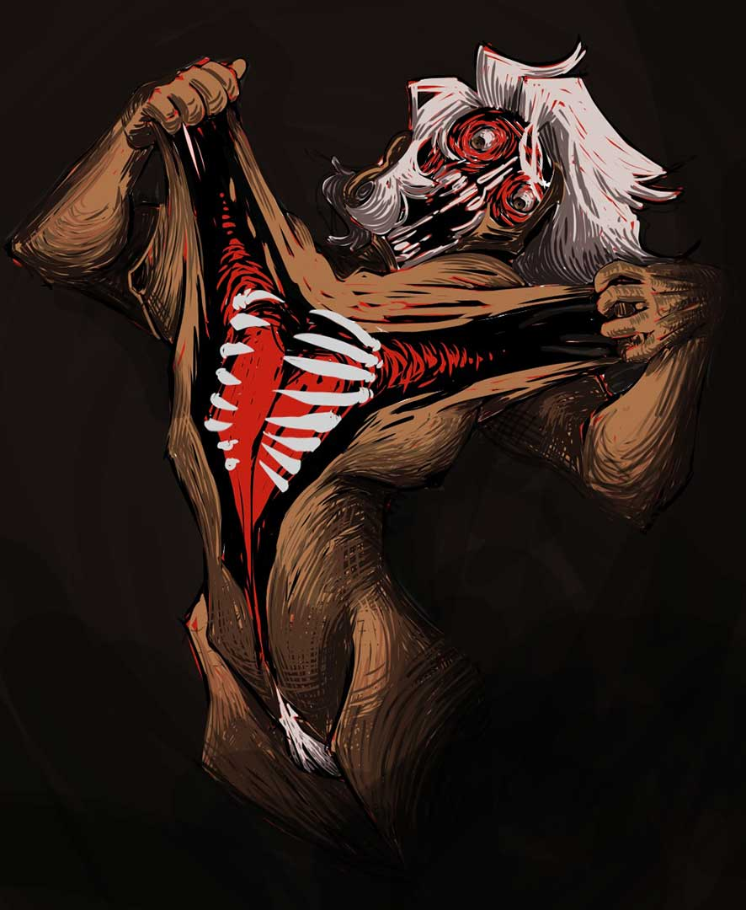

⋆⁺₊⋆ ☁︎ Dysphoria


We were essentially given free reign to have our projects be about whatever we wanted, so I wanted to make something a bit more self-indulgent. I experimented with screenprinting on stretch fabric since I had no idea how the paint would react to being stretched out. I was hoping it'd get brittle and break apart, but it instead stretched with the fabric. Slightly disappointing, but it still looked kind of cool. The final project is a rudimentary paper doll (chipboard doll??) where you could grab his arms and participate in stretching his skin.